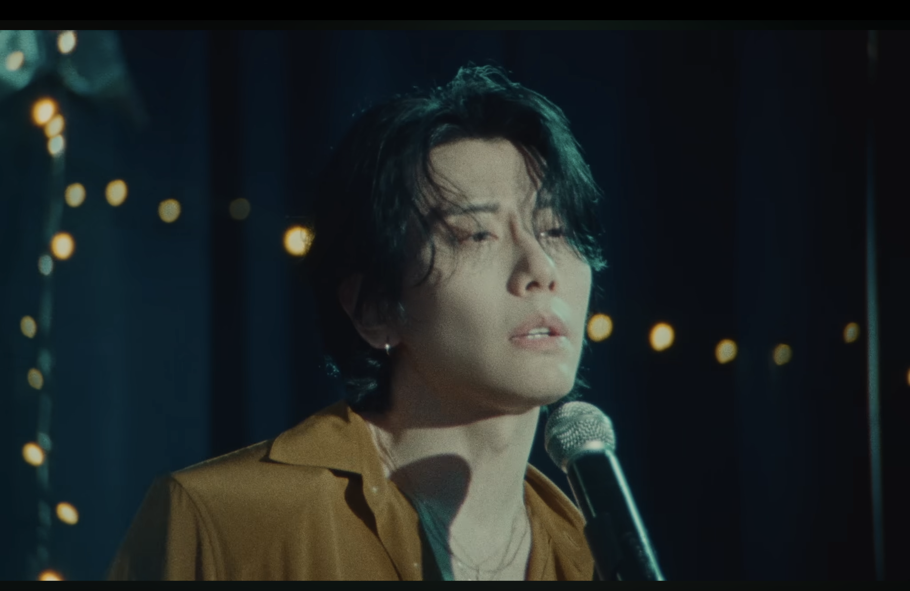

A&E
제가 정말 좋아하는 가수인 박효신의 가장 최근앨범을 소개합니다.
학창시절을 함께했던 박효신의 거의 10년만의 컴백 앨범이다.
총 7곡이 담겨 있고, 타이틀곡인 AE와 Any Love를 중심으로 다양한 감성을 보여준다.
Track List
review
박효신의 6년만의 신곡 'A&E'는 고대 라틴어에서 영감을 얻은 타이틀곡으로,
오랜시간 작업한만큼 섬세한 멜로디와 부드러운 보컬이 잘 어우러진 웰메이드 곡이다.
타이틀의 의미
'A&E'는 고대 라틴어의 합자 'æ'에서 유래했습니다.
A와 E가 하나의 글자로 합쳐지는 모습처럼, '소중한 사람들'을
음악 안에 담아 하나로 연결하고자 하는 박효신의 따뜻한 메시지를 담고 있습니다.
보컬과 멜로디
샘김과의 협업으로 사운드는 훨씬 혀대적으로 바뀌었고, 영어 가사 비중도 자연스럽게 늘어났습니다. 박효신이 긴 시간 동안 가사를 여러번 고치며 쓴 곡입니다.
담담하게 시작하여 점차 감정을 쌓아올리는 구조로 완성도가 높은 앨범입니다.
감상 및 후기
초등학교 시절, '좋은사람'이라는 곡으로 박효신을 처음 접했습니다. 그때 들었던 목소리는 어린 나이의 저에게 정말 너무나도 닮고 싶고, 계속 듣고 싶은 목소리였습니다. 그렇게 초등학생 때부터 지금까지 제 삶과 늘 함께해 온 가수의 컴백 앨범입니다.
오랜 시간만큼 기대가 정말 컸기에, 발매 당일에도 앨범이 업로드되기만을 손꼽아 기다렸습니다. 처음 음원이 공개되자마자 들었던 솔직한 심정은 '내가 기대했던 스타일과 너무 다르다'는 점이었습니다. 솔직히 첫 느낌은 아쉬움이 조금 더 강했던 것 같습니다.
하지만 귀에 익을 때까지 계속해서 듣다 보니, 어느새 멜로디와 가사가 너무나도 포근하게 다가왔습니다. 이 앨범은 들으면 들을수록 마음이 편안해지는 마법 같은 매력을 가진 것 같습니다. 오랜 기다림 끝에 찾아와 준, 참 고마운 웰메이드 앨범입니다.
Gallery


